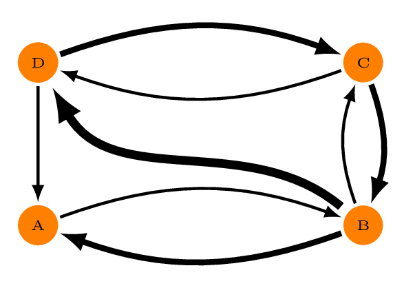
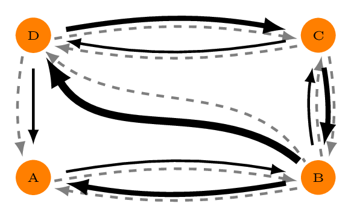
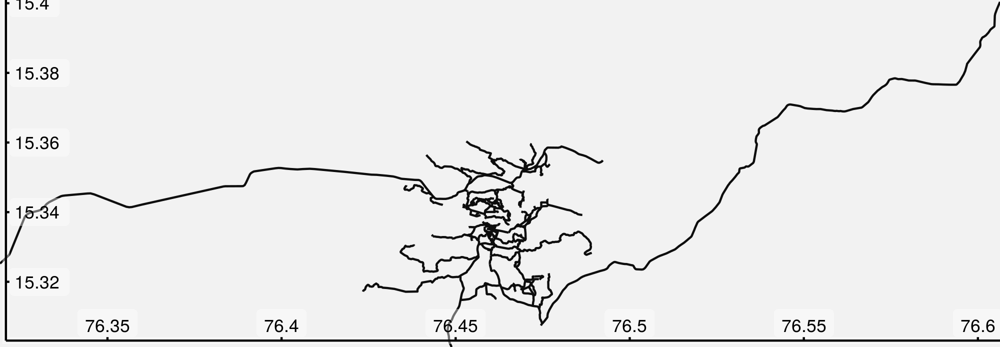
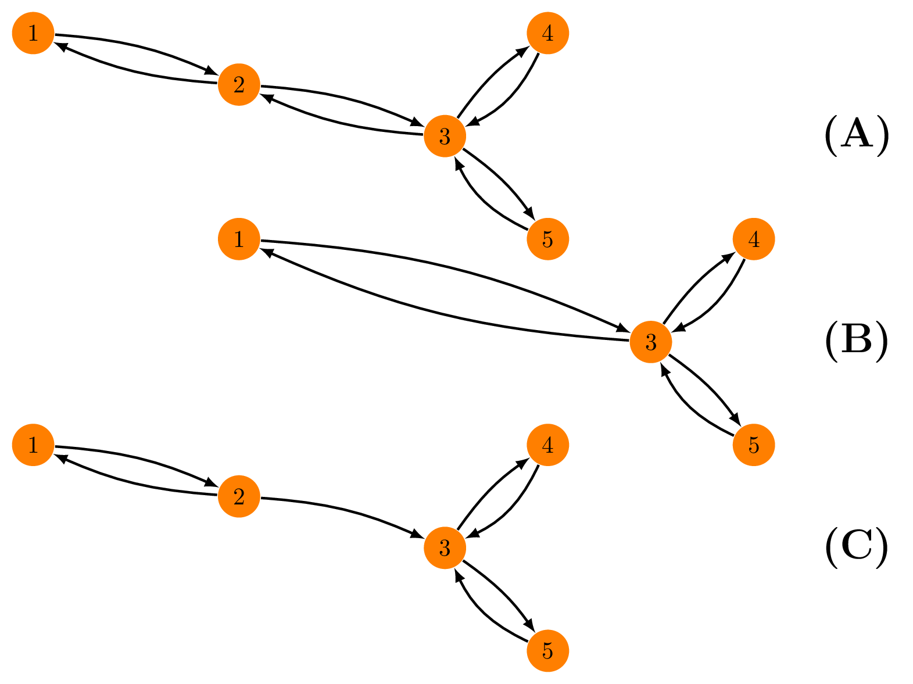

1 Background: Directed Graphs
dodgr is an R package for calculating
Distances On Directed
Graphs. It does so very efficiently, and is able to
process larger graphs than many other comparable R
packages. Skip straight to the Intro if you know what directed graphs
are (but maybe make a brief stop-in to Dual-Weighted Directed Graphs
below.) Directed graphs are ones in which the “distance” (or some
equivalent measure) from A to B is not necessarily equal to that from B
to A. In Fig. 1, for example, the weights between the graph vertices (A,
B, C, and D) differ depending on the direction of travel, and it is only
possible to traverse the entire graph in an anti-clockwise
direction.

Graphs in dodgr are represented by simple flat
data.frame objects, so the graph of Fig. 1, presuming the
edge weights to take values of 1, 2, and 3, would be,
## from to d
## 1 A B 1
## 2 B A 2
## 3 B C 1
## 4 B D 3
## 5 C B 2
## 6 C D 1
## 7 D C 2
## 8 D A 1The primary function of dodgr is
dodgr_dists, which calculates pair-wise shortest distances
between all vertices of a graph.
dodgr_dists (graph)## A B C D
## A 0 1 2 3
## B 2 0 1 2
## C 2 2 0 1
## D 1 2 2 0
dodgr_dists (graph, from = c ("A", "C"), to = c ("B", "C", "D"))## B C D
## A 1 2 3
## C 2 0 11.1 Dual-Weighted Directed Graphs
Shortest-path distances on weighted graphs can be calculated using a
number of other R packages, such as igraph
or e1071.
dodgr comes into its own through its ability to trace paths
through dual-weighted directed graphs, illustrated in Fig.
2.

Dual-weighted directed graphs are common in many areas, a foremost example being routing through street networks. Routes through street networks depends on mode of transport: the route a pedestrian might take will generally differ markedly from the route the same person might take if behind the wheel of an automobile. Routing through street networks thus generally requires each edge to be specified with two weights or distances: one quantifying the physical distance, and a second weighted version reflecting the mode of transport (or some other preferential weighting).
dodgr calculates shortest paths using one set of weights
(called “weights” or anything else starting with “w”), but returns the
actual lengths of them using a second set of weights (called
“distances”, or anything else starting with “d”). If no weights are
specified, distances alone are used both for routing and final distance
calculations. Consider that the weights and distances of Fig. 2 are the
black and grey lines, respectively, with the latter all equal to one. In
this case, the graph and associated shortest distances are,
## from to w d
## 1 A B 1 1
## 2 B A 2 1
## 3 B C 1 1
## 4 B D 3 1
## 5 C B 2 1
## 6 C D 1 1
## 7 D C 2 1
## 8 D A 1 1## A B C D
## A 0 1 2 2
## B 1 0 1 1
## C 2 1 0 1
## D 1 2 1 0Note that even though the shortest “distance” from A to D is actually
ABD
with a distance of only 2, that path has a weighted distance of 1 + 3 =
4. The shortest weighted path is
ABCD,
with a distance both weighted and unweighted of 1 + 1 + 1 = 3. Thus
d(A,D) = 3 and not 2.
2 Introduction to dodgr
Although the package has been intentionally developed to be adaptable
to any kinds of networks, most of the applications illustrated here
concern street networks, and also illustrate several helper functions
the package offers for working with street networks. The basic
graph object of dodgr is nevertheless
arbitrary, and need only minimally contain three or four columns as
demonstrated in the simple examples at the outset.
The package may be used to calculate a matrix of distances between a given set of geographic coordinates. We can start by simply generating some random coordinates, in this case within the bounding box defining the city of York in the U.K.
bb <- osmdata::getbb ("york uk")
npts <- 1000
xy <- apply (bb, 1, function (i) min (i) + runif (npts) * diff (i))
bb; head (xy)## min max
## x -1.241536 -0.9215361
## y 53.799056 54.1190555## x y
## [1,] -1.1713502 53.89409
## [2,] -1.2216108 54.01065
## [3,] -1.0457199 53.83613
## [4,] -0.9384666 53.93545
## [5,] -0.9445541 53.89436
## [6,] -1.1207099 54.01262The following lines download the street network within that bounding
box, weight it for pedestrian travel, and use the weighted network to
calculate the pairwise distances between all of the
xypoints.
net <- dodgr_streetnet (bb)
net <- weight_streetnet (net, wt_profile = "foot")
system.time (
d <- dodgr_dists (net, from = xy, to = xy)
)## user system elapsed
## 38.828 0.036 5.424## [1] 1000 1000## [1] 0.00 57021.18The result is a matrix of 1000-by-1000 distances of up to 57km long,
measured along routes weighted for optimal pedestrian travel. In this
case, the single call to dodgr_distances()
automatically downloaded the entire street network of York and
calculated one million shortest-path distances, all in under 30
seconds.
3 Graphs and Street Networks
Although the above code is short and fast, most users will probably
want more control over their graphs and routing possibilities. To
illustrate, the remainder of this vignette analyses the much smaller
street network of Hampi, Karnataka, India, included in the
dodgr package as the dataset hampi.
This data set may be re-created with the following single line:
hampi <- dodgr_streetnet ("hampi india")Or with the equivalent version bundled with the package:
class (hampi)## [1] "sf" "data.frame"
class (hampi$geometry)## [1] "sfc_LINESTRING" "sfc"
dim (hampi)## [1] 236 15The streetnet is an sf (Simple
Features) object containing 189 LINESTRING geometries. In
other words, it’s got an sf representation of 189 street
segments. The R package osmplotr can
be used to visualise this street network (with the help of
magrittr pipe operator, %>%):
library (osmplotr)
library (magrittr)
map <- osm_basemap (hampi, bg = "gray95") %>%
add_osm_objects (hampi, col = "gray5") %>%
add_axes () %>%
print_osm_map ()
The sf class data representing the street network of
Hampi can then be converted into a flat data.frame object
by
graph <- weight_streetnet (hampi, wt_profile = "foot")
dim (graph)## [1] 6813 15
head (graph)## geom_num edge_id from_id from_lon from_lat to_id to_lon to_lat
## 1 1 1 339318500 76.47491 15.34167 339318502 76.47612 15.34173
## 2 1 2 339318502 76.47612 15.34173 339318500 76.47491 15.34167
## 3 1 3 339318502 76.47612 15.34173 2398958028 76.47621 15.34174
## 4 1 4 2398958028 76.47621 15.34174 339318502 76.47612 15.34173
## 5 1 5 2398958028 76.47621 15.34174 1427116077 76.47628 15.34179
## 6 1 6 1427116077 76.47628 15.34179 2398958028 76.47621 15.34174
## d d_weighted highway way_id component time time_weighted
## 1 130.000241 130.000241 path 28565950 1 93.600174 93.600174
## 2 130.000241 130.000241 path 28565950 1 93.600174 93.600174
## 3 8.890622 8.890622 path 28565950 1 6.401248 6.401248
## 4 8.890622 8.890622 path 28565950 1 6.401248 6.401248
## 5 9.307736 9.307736 path 28565950 1 6.701570 6.701570
## 6 9.307736 9.307736 path 28565950 1 6.701570 6.701570Note that the actual graph contains around 30 times as many edges as there are streets, indicating that each street is composed on average of around 30 individual segments. The individual points or vertices from those segments can be extracted with,
vt <- dodgr_vertices (graph)
head(vt)## id x y component n
## 1 339318500 76.47491 15.34167 1 0
## 2 339318502 76.47612 15.34173 1 1
## 4 2398958028 76.47621 15.34174 1 2
## 6 1427116077 76.47628 15.34179 1 3
## 8 7799710916 76.47634 15.34184 1 4
## 10 339318503 76.47641 15.34190 1 5
dim (vt)## [1] 3337 5From which we see that the OpenStreetMap representation of the streets of Hampi has 189 line segments with 2,987 unique points and 6,096 edges between those points. The number of edges per vertex in the entire network is thus,
## [1] 2.041654A simple straight line has two edges between all intermediate nodes,
and this thus indicates that the network in it’s entirety is quite
simple. The data.frame resulting from weight_streetnet()
is what dodgr uses to calculate shortest path routes, as
will be described below, following a brief description of weighting
street networks.
3.1 Graph Components
The foregoing graph object returned from weight_streetnet()
also includes a $component column enumerating all of the
distinct inter-connected components of the graph.
table (graph$component)##
## 1 2 3
## 4649 2066 98Components are numbered in order of decreasing size, with
$component = 1 always denoting the largest component. In
this case, that component contains 3,934 edges, representing 65% of the
graph. There are clearly only three distinct components, but this number
may be much larger for larger graphs, and may be obtained from,
## [1] 3Component numbers can be determined for any types of graph with the
dodgr_components()
function. For example, the following lines reduce the previous graph to
a minimal (non-spatial) structure of four columns, and then
(re-)calculate a fifth column of $components:
cols <- c ("edge_id", "from_id", "to_id", "d")
graph_min <- graph [, which (names (graph) %in% cols)]
graph_min <- dodgr_components (graph_min)
head (graph_min)## edge_id from_id to_id d component
## 1 1 339318500 339318502 130.000241 1
## 2 2 339318502 339318500 130.000241 1
## 3 3 339318502 2398958028 8.890622 1
## 4 4 2398958028 339318502 8.890622 1
## 5 5 2398958028 1427116077 9.307736 1
## 6 6 1427116077 2398958028 9.307736 1The component column column can be used to select or
filter any component in a graph. It is particularly useful to ensure
routing calculations consider only connected vertices through simply
removing all minor components:
graph_connected <- graph [graph$component == 1, ]This is explored further below (under Distance Matrices).
3.2 Weighting Profiles
Dual-weights for street networks are generally obtained by
multiplying the distance of each segment by a weighting factor
reflecting the type of highway. As demonstrated above, this can be done
easily within dodgr with the weight_streetnet()
function, which applies the named weighting profiles included with the
dodgr package to OpenStreetMap networks extracted with the
osmdata
package.
This function uses the internal data dodgr::weighting_profiles,
which is a list of three items:
-
weighting_profiles; -
surface_speeds; and penalties
Most of these data are used to calculate routing times with the
dodgr_times function, as detailed in an additional
vignette. The only aspects relevant for distances are the profiles
themselves, which assign preferential weights to each distinct type of
highway.
wp <- weighting_profiles$weighting_profiles
names (wp)## [1] "name" "way" "value" "max_speed"
class (wp)## [1] "data.frame"
unique (wp$name)## [1] "foot" "horse" "wheelchair" "bicycle" "moped"
## [6] "motorcycle" "motorcar" "goods" "hgv" "psv"
wp [wp$name == "foot", ]## name way value max_speed
## 1 foot motorway 0.00 NA
## 2 foot trunk 0.40 NA
## 3 foot primary 0.50 5
## 4 foot secondary 0.60 5
## 5 foot tertiary 0.70 5
## 6 foot unclassified 0.80 5
## 7 foot residential 0.90 5
## 8 foot service 0.90 5
## 9 foot track 0.95 5
## 10 foot cycleway 0.95 5
## 11 foot path 1.00 5
## 12 foot steps 0.80 2
## 13 foot ferry 0.20 5
## 14 foot living_street 0.95 5
## 15 foot bridleway 1.00 5
## 16 foot footway 1.00 5
## 17 foot pedestrian 1.00 5
## 18 foot motorway_link 0.00 NA
## 19 foot trunk_link 0.40 NA
## 20 foot primary_link 0.50 5
## 21 foot secondary_link 0.60 5
## 22 foot tertiary_link 0.70 5Each profile is defined by a series of percentage weights quantifying highway-type preferences for a particular mode of travel. The distinct types of highways within the Hampi graph obtained above can be tabulated with:
table (graph$highway)##
## living_street path primary residential secondary
## 20 3557 430 196 560
## service steps track unclassified
## 256 108 914 772Hampi is unlike most other human settlements on the planet in being a
Unesco World Heritage area in which automobiles are generally
prohibited. Accordingly, numbers of "footway",
"path", and "pedestrian" ways far exceed
typical categories denoting automobile traffic
("primary", "residential", "tertiary")
It is also possible to use other types of (non-OpenStreetMap) street
networks, an example of which is the os_roads_bristol
data provided with the package. “OS” is the U.K. Ordnance Survey, and
these data are provided as a Simple Features (sf)
data.frame with a decidedly different structure to
osmdata data.frame objects:
names (hampi) # many fields manually removed to reduce size of this object## [1] "osm_id" "bicycle" "covered" "foot"
## [5] "highway" "incline" "motorcar" "motorcycle"
## [9] "motor_vehicle" "oneway" "surface" "tracktype"
## [13] "tunnel" "width" "geometry"
names (os_roads_bristol)## [1] "fictitious" "identifier" "class" "roadNumber" "name1"
## [6] "name1_lang" "name2" "name2_lang" "formOfWay" "length"
## [11] "primary" "trunkRoad" "loop" "startNode" "endNode"
## [16] "structure" "nameTOID" "numberTOID" "function." "geometry"The latter may be converted to a dodgr network by first
specifying a weighting profile, here based on the formOfWay
column:
colnm <- "formOfWay"
table (os_roads_bristol [[colnm]])##
## Collapsed Dual Carriageway Dual Carriageway
## 14 6
## Single Carriageway Slip Road
## 1 8
wts <- data.frame (name = "custom",
way = unique (os_roads_bristol [[colnm]]),
value = c (0.1, 0.2, 0.8, 1))
net <- weight_streetnet (os_roads_bristol, wt_profile = wts,
type_col = colnm, id_col = "identifier")The resultant net object contains the street network of
os_roads_bristol
weighted by the specified profile, and in a format suitable for
submission to any dodgr routine.
3.3 Random Sub-Graphs
The dodgr packages includes a function to select a
random connected portion of graph including a specified number of
vertices. This function is used in the compare_heaps()
function described below, but is also useful for general statistical
analyses of large graphs which may otherwise take too long to
compute.
graph_sub <- dodgr_sample (graph, nverts = 100)
nrow (graph_sub)## [1] 199The random sample has around twice as many edges as vertices, in accordance with the statistics calculated above.
nrow (dodgr_vertices (graph_sub))## [1] 1004 Distance Matrices: dodgr_dists()
As demonstrated at the outset, an entire network can simply be
submitted to dodgr_distances(),
in which case a square matrix will be returned containing pair-wise
distances between all vertices. Doing that for the graph of
York will return a square matrix of around 90,000-times-90,000 (or 8
billion) distances. It might be possible to do that on some computers,
but is possibly neither recommended nor desirable. The dodgr_distances()
function accepts additional arguments of from and
to defining points from and to which distances are to be
calculated. If only from is provided, a square matrix is
returned of pair-wise distances between all listed points.
4.1 Aligning Routing Points to Graphs
For spatial graphs—that is, those containing columns of latitudes and
longitudes (or “x” and “y”)—routing points can be represented by a
simple matrix of arbitrary latitudes and longitudes (or, again, “x” and
“y”). dodgr_distances()
will map these points to the closest network points, and return
corresponding shortest-path distances. This may be illustrated by
generating random points within the bounding box of the above map of
Hampi. As demonstrated above, the coordinates of all vertices may be
extracted with the dodgr_vertices()
function, enabling random points to be generated with the following
lines:
vt <- dodgr_vertices (graph)
n <- 100 # number of points to generate
xy <- data.frame (x = min (vt$x) + runif (n) * diff (range (vt$x)),
y = min (vt$y) + runif (n) * diff (range (vt$y)))Submitting these to dodgr_distances()
as points from which to route will generate a distance
matrix from each of these 100 points to every other point in the
graph:
d <- dodgr_dists (graph, from = xy)
dim (d); range (d, na.rm = TRUE)## [1] 100 3337## [1] 0.00 14926.04If the to argument is also specified, the matrix
returned will have rows matching from and columns matching
to
d <- dodgr_dists (graph, from = xy, to = xy [1:10, ])
dim (d)## [1] 100 10Some of the resultant distances in the above cases are
NA because the points were sampled from the entire bounding
box, and the street network near the boundaries may be cut off from the
rest. As demonstrated above, the weight_streetnet()
function returns a component vector, and such disconnected
edges will have graph$component > 1, because
graph$component == 1 always denotes the largest connected
component. This means that the graph can always be reduced to the single
largest component with the following single line:
graph_connected <- graph [graph$component == 1, ]A distance matrix obtained from running dodgr_distances
on graph_connected should generally contain no
NA values, although some points may still be effectively
unreachable due to one-way connections (or streets). Thus, routing on
the largest connected component of a directed graph ought to be expected
to yield the minimal number of NA values, which
may sometimes be more than zero. Note further that spatial routing
points (expressed as from and/or to arguments)
will in this case be mapped to the nearest vertices of
graph_connected, rather than the potentially closer nearest
points of the full graph. This may make the spatial mapping
of routing points less accurate than results obtained by repeating
extraction of the street network using an expanded bounding box. For
automatic extraction of street networks with dodgr_distances(),
the extent by which the bounding box exceeds the range of routing points
(from and to arguments) is determined by an
extra parameter expand, quantifying the relative extent to
which the bounding box should exceed the spatial range of the routing
points. This is illustrated in the following code which calculates
distances between 100 random points:
bb <- osmdata::getbb ("york uk")
npts <- 100
xy <- apply (bb, 1, function (i) min (i) + runif (npts) * diff (i))
routed_points <- function (expand = 0, pts) {
gr0 <- dodgr_streetnet (pts = pts, expand = expand) %>%
weight_streetnet ()
d0 <- dodgr_dists (gr0, from = pts)
length (which (is.na (d0))) / length (d0)
}## [1] 0.04007477 0.02326452 0.02131992 0.00000000With a street network that precisely encompasses the submitted
routing points (expand = 0), 4% of pairwise distances are
unable to be calculated; with a bounding box expanded to 5% larger than
the submitted points, this is reduced to 2.3%, and with expansion to
20%, all points can be connected.
For non-spatial graphs, from and to must
match precisely on to vertices named in the graph itself. In the graph
considered above, these vertex names were contained in the columns,
from_id and to_id. The minimum that a
dodgr graph requires is,
## from_id to_id d
## 1 339318500 339318502 130.000241
## 2 339318502 339318500 130.000241
## 3 339318502 2398958028 8.890622
## 4 2398958028 339318502 8.890622
## 5 2398958028 1427116077 9.307736
## 6 1427116077 2398958028 9.307736in which case the from values submitted to
dodgr_dists() (and to, if given) must directly
name the vertices in the from_id and to_id
columns of the graph. This is illustrated in the following code:
graph_min <- graph [, names (graph) %in% c ("from_id", "to_id", "d")]
fr <- sample (graph_min$from_id, size = 10) # 10 random points
to <- sample (graph_min$to_id, size = 20)
d <- dodgr_dists (graph_min, from = fr, to = to)
dim (d)## [1] 10 20The result is a 10-by-20 matrix of distances between these named graph vertices.
4.2 Shortest Path Calculations: Priority Queues
dodgr uses an internal library Shane Saunders (2004) for the calculation of
shortest paths using a variety of priority queues (see Miller 1960 for an overview). In the
context of shortest paths, priority queues determine the order in which
a graph is traversed (Tarjan 1983), and
the choice of priority queue can have a considerable effect on
computational efficiency for different kinds of graphs (Johnson 1977). In contrast to
dodgr, most other R packages for shortest
path calculations do not use priority queues, and so may often be less
efficient. Shortest path distances can be calculated in
dodgr with priority queues that use the following
heaps:
- Binary heaps;
- Fibonacci heaps (Fredman and Tarjan 1987);
- Trinomial and extended trinomial heaps (Takaoka 2000); and
- 2-3 heaps (Takaoka 1999).
Differences in how these heaps operate are often largely extraneous
to direct application of routing algorithms, even though heap choice may
strongly affect performance. To avoid users needing to know anything
about algorithmic details, dodgr provides a function compare_heaps()
to which a particular graph may be submitted in order to determine the
optimal kind of heap.
The comparisons are actually made on a randomly selected sub-component of the graph containing a defined number of vertices (with a default of 1,000, or the entire graph if it contains fewer than 1,000 vertices).
compare_heaps (graph, nverts = 100)## Loading required namespace: bench## Loading required namespace: igraph## # A tibble: 11 × 6
## expression min median `itr/sec` mem_alloc `gc/sec`
## <bch:expr> <bch:tm> <bch:tm> <dbl> <bch:byt> <dbl>
## 1 BHeap 1.96ms 2.01ms 496. 45.9KB 15.9
## 2 FHeap 1.96ms 2.03ms 490. 45.9KB 15.0
## 3 TriHeap 1.97ms 2.05ms 486. 45.9KB 17.4
## 4 TriHeapExt 1.78ms 1.84ms 535. 48.9KB 17.3
## 5 Heap23 1.95ms 2.03ms 491. 45.9KB 15.0
## 6 BHeap_contracted 1.75ms 1.82ms 548. 19KB 19.5
## 7 FHeap_contracted 1.75ms 1.83ms 547. 19KB 17.3
## 8 TriHeap_contracted 1.75ms 1.83ms 543. 19KB 17.3
## 9 TriHeapExt_contracted 1.5ms 1.56ms 629. 19KB 19.6
## 10 Heap23_contracted 1.75ms 1.83ms 543. 19KB 19.6
## 11 igraph 579.65µs 607.92µs 1624. 336.7KB 21.5The key column of that data.frame is
relative, which quantifies the relative performance of each
test in relation to the best which is given a score of 1.
dodgr using the default heap = "BHeap", which
is a binary heap priority queue, performs faster than igraph (Csardi and Nepusz 2006) for these graphs.
Different kind of graphs will perform differently with different
priority queue structures, and this function enables users to
empirically discern the optimal heap for their kind of graph.
Note, however, that this is not an entirely fair comparison, because
dodgr calculates dual-weighted distances, whereas igraph—and indeed all other
R packages—only directly calculate distances based on a
single set of weights. Implementing dual-weighted routing in these cases
requires explicitly re-tracing all paths and summing the second set of
weights along each path. A time comparison in that case would be very
strongly in favour of dodgr. Moreover, dodgr
can convert graphs to contracted form through removing redundant
vertices, as detailed in the following section. Doing so greatly
improves performance with respect to igraph.
For those wishing to do explicit comparisons themselves, the
following code generates the igraph equivalent of dodgr_distances(),
although of course for single-weighted graphs only:
v <- dodgr_vertices (graph)
pts <- sample (v$id, 1000)
igr <- dodgr_to_igraph (graph)
d <- igraph::distances (igr, v = pts, to = pts, mode = "out")5 Graph Contraction
A further unique feature of dodgr is the ability to
remove redundant vertices from graphs (see Fig. 3), thereby speeding up
routing calculations.

In Fig. 3(A), the only way to get from vertex 1 to 3, 4 or 5 is through C. The intermediate vertex B is redundant for routing purposes (and than to or from that precise point) and may simply be removed, with directional edges inserted directly between vertices 1 and 3. This yields the equivalent contracted graph of Fig. 3(B), in which, for example, the distance (or weight) between 1 and 3 is the sum of previous distances (or weights) between 1 2 and 2 3. Note that if one of the two edges between, say, 3 and 2 were removed, vertex 2 would no longer be redundant (Fig. 3(C)).
Different kinds of graphs have different degrees of redundancy, and
even street networks differ, through for example dense inner-urban
networks generally being less redundant than less dense extra-urban or
rural networks. The contracted version of a graph can be obtained with
the function dodgr_contract_graph(),
illustrated here with the York example from above.
grc <- dodgr_contract_graph (graph)The function dodgr_contract_graph()
returns the contracted version of the original graph, containing the
same number of columns, but with each row representing an edge between
two junction vertices (or between the submitted verts,
which may or may not be junctions). Relative sizes are
## [1] 6813## [1] 876## [1] 0.1285777equivalent to the removal of around 90% of all edges. The difference in routing efficiency can then be seen with the following code
from <- sample (grc$from_id, size = 100)
to <- sample (grc$to_id, size = 100)
bench::mark (
full = dodgr_dists (graph, from = from, to = to),
contracted = dodgr_dists (grc, from = from, to = to),
check = FALSE # numeric rounding errors can lead to differences
)## # A tibble: 2 × 6
## expression min median `itr/sec` mem_alloc `gc/sec`
## <bch:expr> <bch:tm> <bch:tm> <dbl> <bch:byt> <dbl>
## 1 full 12.48ms 13.29ms 75.9 1.24MB 2.05
## 2 contracted 2.74ms 2.89ms 340. 297.09KB 2.03And contracting the graph has a similar effect of speeding up pairwise routing between these 100 points. All routing algorithms scale non-linearly with size, and relative improvements in efficiency will be even greater for larger graphs.
5.1 Routing on Contracted Graphs
Routing is often desired between defined points, and these points may
inadvertently be removed in graph contraction. The dodgr_contract_graph()
function accepts an additional argument specifying vertices to keep
within the contracted graph. This list of vertices must directly match
the vertex ID values in the graph.
The following code illustrates how to retain specific vertices within contracted graphs:
grc <- dodgr_contract_graph (graph)
nrow (grc)## [1] 876
verts <- sample (dodgr_vertices (graph)$id, size = 100)
head (verts) # a character vector## [1] "2627465897" "8618022288" "2627436884" "1204772874" "3921517060"
## [6] "2398957887"
grc <- dodgr_contract_graph (graph, verts)
nrow (grc)## [1] 990Retaining the nominated vertices yields a graph with considerably
more edges than the fully contracted graph excluding these vertices. The
dodgr_distances()
function can be applied to the latter graph to obtain accurate distances
precisely routed between these points, yet using the speed advantages of
graph contraction.
6 Shortest Paths
Shortest paths can also be extracted with the dodgr_paths()
function. For given vectors of from and to
points, this returns a nested list so that if,
dp <- dodgr_paths (graph, from = from, to = to)then dp [[i]] [[j]] will contain the path from
from [i] to to [j]. The paths are represented
as sequences of vertex names. Consider the following example,
graph <- weight_streetnet (hampi, wt_profile = "foot")
head (graph)## geom_num edge_id from_id from_lon from_lat to_id to_lon to_lat
## 1 1 1 339318500 76.47491 15.34167 339318502 76.47612 15.34173
## 2 1 2 339318502 76.47612 15.34173 339318500 76.47491 15.34167
## 3 1 3 339318502 76.47612 15.34173 2398958028 76.47621 15.34174
## 4 1 4 2398958028 76.47621 15.34174 339318502 76.47612 15.34173
## 5 1 5 2398958028 76.47621 15.34174 1427116077 76.47628 15.34179
## 6 1 6 1427116077 76.47628 15.34179 2398958028 76.47621 15.34174
## d d_weighted highway way_id component time time_weighted
## 1 130.000241 130.000241 path 28565950 1 93.600174 93.600174
## 2 130.000241 130.000241 path 28565950 1 93.600174 93.600174
## 3 8.890622 8.890622 path 28565950 1 6.401248 6.401248
## 4 8.890622 8.890622 path 28565950 1 6.401248 6.401248
## 5 9.307736 9.307736 path 28565950 1 6.701570 6.701570
## 6 9.307736 9.307736 path 28565950 1 6.701570 6.701570The columns of from_id and to_id contain
the names of the vertices. To extract shortest paths between some of
these, first take some small samples of from and
to points, and submit them to dodgr_paths():
from <- sample (graph$from_id, size = 10)
to <- sample (graph$to_id, size = 5)
dp <- dodgr_paths (graph, from = from, to = to)
length (dp)## [1] 10The result (dp) is a list of 10 items, each of which
contains 5 vectors. An example is,
dp [[1]] [[1]]## [1] "7794251379" "2588155758" "7794251378" "7794251377" "7794251376"
## [6] "2588155745" "7794251375" "7794251374" "2588155759" "7794251373"
## [11] "7794251372" "2588155721" "2588155728" "2588155748" "7794251371"
## [16] "7794251370" "2588155708" "2588155743" "7794251369" "7794251368"
## [21] "7794251367" "2588155725" "2588155741" "7794251366" "7794251365"
## [26] "2588155773" "2588155737" "7794251364" "7794251363" "7794251362"
## [31] "2588155717" "7794251361" "7794251360" "7794251359" "7794251358"
## [36] "2588155727" "2588155731" "7794251357" "2588155730" "7794251356"
## [41] "7794251355" "7794251354" "2588155760" "7794251353" "7794251352"
## [46] "2588155732" "7794251351" "7794251350" "7794251349" "7794251348"
## [51] "2588155734" "7794251347" "2588155765" "7794251345" "7794251346"
## [56] "7794251344" "2588155767" "7794251343" "7794251342" "7794251341"
## [61] "2588155751" "2588155724" "7794251340" "7794251339" "7794251338"
## [66] "2588155756" "7794251337" "2588155772" "2588155763" "7794251336"
## [71] "7794251335" "2588155747" "2588155707" "2588155729" "2588155746"
## [76] "2588155713" "2588155719" "7794251333" "7794251334" "2588155704"
## [81] "2588155723" "2588155711" "2588155757" "2588155716" "2588155777"
## [86] "2588155750" "2588155754" "2588155755" "2588155712" "2588155779"
## [91] "2588155771" "2588155718" "2588155703" "2588155714" "2588155776"
## [96] "2588155740" "2588155778" "2588155726" "2588155706" "2588155705"
## [101] "2398957796" "2398957797" "2398957798" "340148006" "340148007"
## [106] "2398957809" "2398957814" "286632895" "1390214618" "2398957831"
## [111] "2398957835" "286632896" "2398957838" "1604033309" "2398957841"
## [116] "2398957842" "2398957844" "338512693" "2627477006" "4035136503"
## [121] "4035136504" "4035136505" "4035136506" "4035136507" "4035136508"
## [126] "4035136509" "4035136510" "4035136511" "4035136512" "4035136513"
## [131] "4035136514" "4035136515" "4035136516" "4035136517" "4035136527"
## [136] "4035136518" "4035136519" "4035136520" "4035136521" "4035136522"
## [141] "4035136525" "8616917034" "2398957817" "1054865512" "2398957821"
## [146] "2398957822" "338904633" "2398957824" "338904630" "1148815092"
## [151] "2398957827" "2398957829" "338904628" "2398957830" "1054866750"
## [156] "2398957833" "1148815271" "2398957836" "1148814749"For spatial graphs, the coordinates of these paths can be obtained by
extracting the vertices with dodgr_vertices() and matching
the vertex IDs:
verts <- dodgr_vertices (graph)
path1 <- verts [match (dp [[1]] [[1]], verts$id), ]
head (path1)## id x y component n
## 3664 7794251379 76.43803 15.32648 1 1838
## 3666 2588155758 76.43829 15.32639 1 1839
## 3668 7794251378 76.43845 15.32631 1 1840
## 3670 7794251377 76.43872 15.32621 1 1841
## 3672 7794251376 76.43891 15.32619 1 1842
## 3674 2588155745 76.43914 15.32618 1 1843Paths calculated on contracted graphs will of course have fewer vertices than those calculated on full graphs.